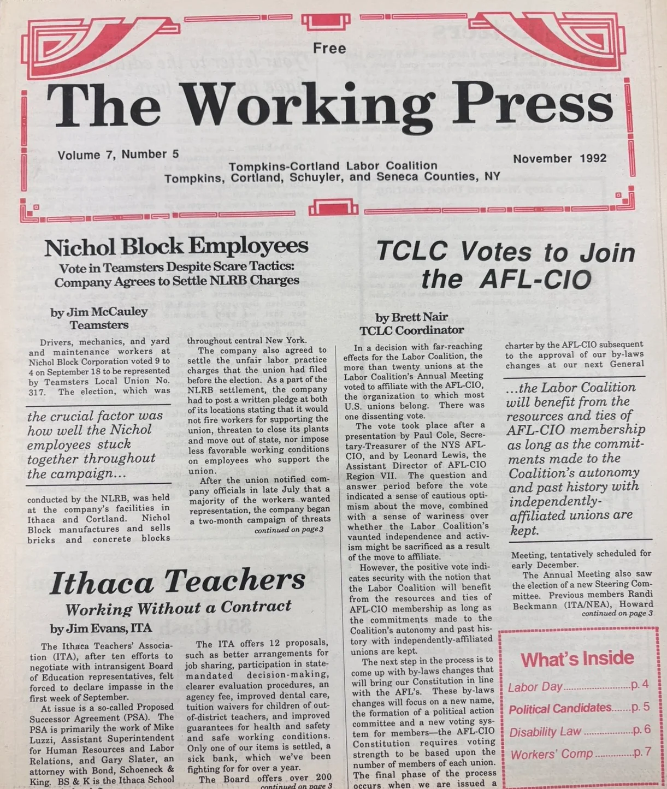

The run
Every issue digitised so far, in order. Click an issue to browse its pages.
Start here
A few stories worth opening first, with a note on why they matter.
Digital archive · Tompkins-Cortland Labor Coalition
The Coalition's own newspaper, covering unions and workers across Tompkins, Cortland, Schuyler, and Seneca counties. Recovered from microfilm, searchable page by page.
loading…

Every issue digitised so far, in order. Click an issue to browse its pages.
A few stories worth opening first, with a note on why they matter.